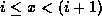
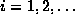
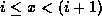
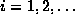
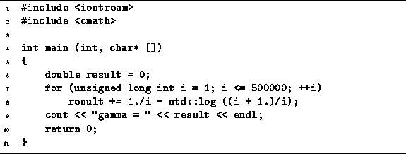

Data Structures and Algorithms
with Object-Oriented Design Patterns in C++
Data Structures and Algorithms
with Object-Oriented Design Patterns in C++
The series  is
called the harmonic series ,
and the summation
is
called the harmonic series ,
and the summation

gives rise to the series of harmonic numbers ,
 ,
,  , ...
As it turns out,
harmonic numbers often creep into the analysis of algorithms.
Therefore, we should understand a little bit about how they behave.
, ...
As it turns out,
harmonic numbers often creep into the analysis of algorithms.
Therefore, we should understand a little bit about how they behave.
A remarkable characteristic of harmonic numbers is that,
even though as n gets large and
the difference between consecutive harmonic numbers
gets arbitrarily small (  ),
the series does not converge!
I.e.,
),
the series does not converge!
I.e.,  does not exist.
In other words, the summation
does not exist.
In other words, the summation  goes off to infinity, but just barely.
goes off to infinity, but just barely.
Figure  helps us
to understand the behavior of harmonic numbers.
The smooth curve in this figure is the function y=1/x.
The descending staircase represents
the function
helps us
to understand the behavior of harmonic numbers.
The smooth curve in this figure is the function y=1/x.
The descending staircase represents
the function  .
. I.e., for , y=1/i, for 
I.e., for , y=1/i, for 

Figure: Computing Harmonic Numbers
Notice that the area under the staircase between 1 and n for any integer n>1 is given by

Thus, if we can determine the area under the descending staircase
in Figure ,
we can determine the values of the harmonic numbers.
As an approximation, consider the area under the smooth curve y=1/x:

Thus,  is approximately
is approximately  for n>1.
for n>1.
If we approximate  by
by  ,
the error in this approximation is equal to the area between the two curves.
In fact, the area between these two curves
is such an important quantity that it has its own symbol,
,
the error in this approximation is equal to the area between the two curves.
In fact, the area between these two curves
is such an important quantity that it has its own symbol,
 ,
which is called Euler's constant .
The following derivation indicates a way
in which to compute Euler's constant:
,
which is called Euler's constant .
The following derivation indicates a way
in which to compute Euler's constant:

A program to compute Euler's constant on the basis of this derivation
is given in Program .
While this is not necessarily the most accurate
or most speedy way to compute Euler's constant,
it does give the correct result to six significant digits.

Program: Program to compute 
So, with Euler's constant in hand,
we can write down an expression for the  harmonic number:
harmonic number:
where  is the error introduced by the fact that
is the error introduced by the fact that
 is defined as the difference between the curves on the interval
is defined as the difference between the curves on the interval
 , but we only need the difference on the interval [1,n].
As it turns out, it can be shown (but not here),
that there exists a constant K such that
for large enough values of n,
, but we only need the difference on the interval [1,n].
As it turns out, it can be shown (but not here),
that there exists a constant K such that
for large enough values of n,  .
.
Since the error term is less than 1/n,
we can add 1/n to both sides of Equation
and still have an error which goes to zero as n gets large.
Thus, the usual approximation for the harmonic number is

We now return to the question of finding the average running
time of Program ,
which finds the largest element of an array.
We can now rewrite Equation to give

 Copyright © 1997 by Bruno R. Preiss, P.Eng. All rights reserved.
Copyright © 1997 by Bruno R. Preiss, P.Eng. All rights reserved.